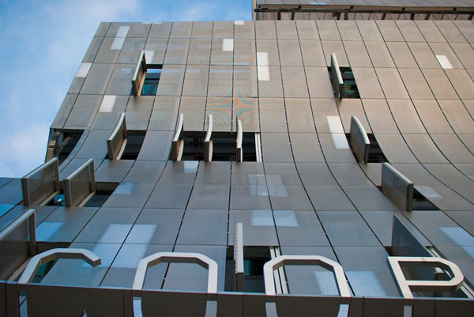

Exterior Double Skin
Exterior Double Skin

What is the exterior double skin?
The exterior double skin is the mesh screen surrounding all of 41CS. Constructed from 50% perforated steel skins, the purpose of the facade is to air in temperature regulation in order to maximize efficiency of the heating and cooling system of the building.
How is it energy efficient?
The double skin reduces solar loads during the summer while reducing heat loss by 26% during the winter.
|
 |